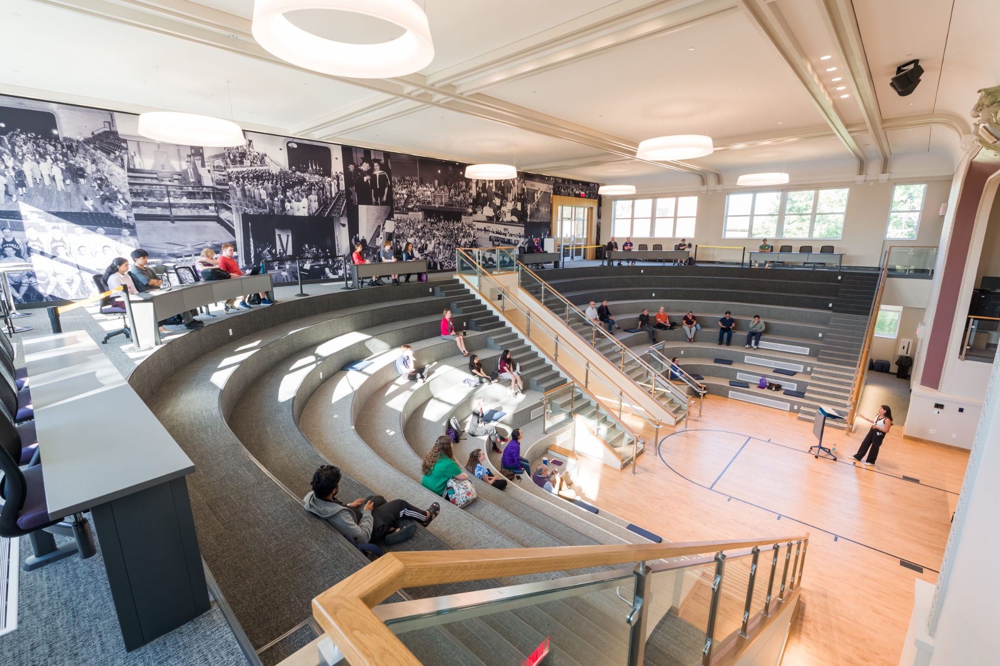

Computer Science
Design software, explore computing systems, and solve practical problems with technology.
- BS in Computer Science
- Research and software projects
- ACM, TWiCS, and developer groups

Explore Computer Science, Data Science, and Statistics at Truman State University—three connected disciplines where students turn curiosity into skills, research, and new opportunities.
Whether you want to create software, uncover patterns in data, or use statistical evidence to solve problems, Truman has a path for you.
Design software, explore computing systems, and solve practical problems with technology.
Connect computing and statistics to extract insights and communicate stories from data.
Study uncertainty, modeling and inference to make sound decisions with evidence.

Our three programs share a commitment to strong academic foundations and student experience. The department offers routes into research, consulting, programming communities, seminars, and professional connections.
Our students and alumni carry computing and quantitative skills into industry, graduate study, research, and public service.

Conversations with alumni connect students with career perspectives, mentoring, and life after graduation.
Talks and seminars introduce students to research questions, industry practice, and emerging opportunities.
See where Truman graduates have taken their next steps.
Explore our programs, connect with faculty, and experience campus for yourself.